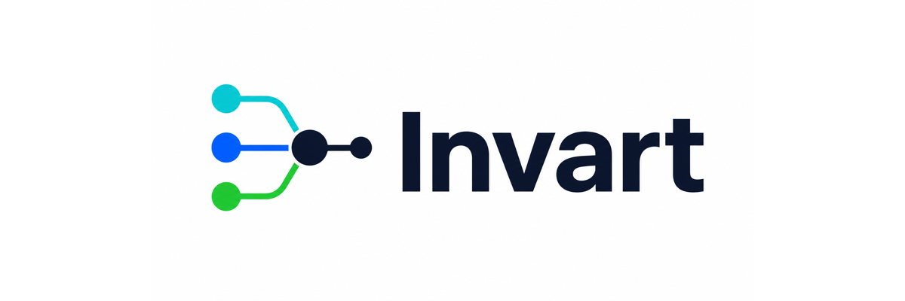

Start
Product Overview
What Invart is, who it helps, and how the three-stage control loop works.
Quickstart
Install locally, create a managed session, record one action, export proof, and verify it.
Examples
Runnable examples for local sessions, policy profiles, risk demos, and containerized flows.
Runtime Effect Demo
See before / during / after runtime mapped to L1-L5 with a matrix and action timeline.
Understand
Core Concepts
Ledger, proof, policy, mediation, path graph, coverage, approval, and evidence bundle.
Architecture
Three stages, five layers, and how adapters, daemon state, policy, ledger, and proof fit together.
Release History
A compact public summary of the implementation tracks behind the 0.9 pre-release.
Integrate
CLI Reference
The practical command groups users should automate first.
API & SDK
The stable CLI and artifact contracts, plus provisional Python helper entry points.
Evaluate
Evaluation
Built-in benchmarks, product-effectiveness metrics, and external validation boundaries.
Open-source Boundary
What is intended for GitHub and what stays in local internal planning.